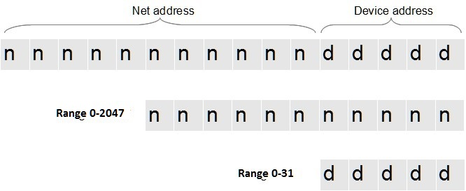
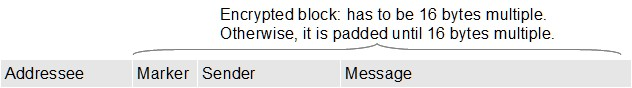

|
LORA class contains simplified functions to send and receive message using LoRa protocol.
First of all, define:Include library, then instance class. Now you have to define network structure. Network structure. This library allows you to define a network address and a defined number of available local addresses. But this partition is variable. So, you can decide to have a long net address and short device address range or viceversa. That is because the total address field is word wide (16 bits). For example if you decide to settle devices range to 31 slots, your net address can be decided inside the 0-2047 range.  To define the net structure you have to use just the function : setDevRange(5);
Now you have to choose network address using the function: defineNetAddress(...); Repeat this procedure on each device and your network is configured. So, when you send a message you have to use just local address for sender and receiver; library composes complete addresses for you. Criptography The message protocol is composed by receiver address, a random marker, a sender address and string message. Messages are protecetd by AES256 cryptography algorithm. The starting key is provided by a unsigned number (seed) that produces 32 pseudo random bytes that are finally used to produce the real 240 bytes long key.  So, you have to initialize LORA class using just a number with function: begin(...) This number starts random number generator with this seed. Real key is produced in terms of 32 bytes. Therefore, this procedure works only for Arduino based LoRa devices where equal seed produces equal 32 bytes starting key. Example of definitions phase:
In summary: Starting functionsint defDevRange(unsigned char code); Defines net structure. Returns max net address availlable or -1 if code wrong.bool defNetAddress(unsigned int add); Defines net address. returns false if address out of range.bool begin(unsigned int keyval); Starts radio module and makes AES key using a starting number. Returns false if radio module not available.If you are using radio module in other modulation mode and you want to change to LoRa mode, you can use this function : void setModeLora(unsigned int keyval); instead of previous function. Change transmission parametersUntil now you are using default value for transmission parameters : frequency (434.00MHz), transmission power (10 dBm), spreading factor (12), band width (125 kHz) and code redundancy (4). You can change them using these functions:void setFrequency(float freq); Set frequency in MHz(ex.: 433.5).void setPower(int code); Set power. Code: 1=7dBm, 2=10dBm, 3=13dBm, 4=17dBm, 5=20dBmvoid setConfig(byte sprf, byte bw, byte cr); SF: from 7 to 12, BW: from 0(7.8kHz) to 9(500kHz), CR: 1 to 4 (see Parameters Code page or SX1278 data sheet)
void setSleepState(boolean yes); Set radio module in sleep state (very low consuming) if yes=true. Otherwise set radio module in standby (default state).
Other basic functions are described in LORA.h files. For particular uses you can see this file. Inside LORA class you can call SX1278 functions with prefix SX because SX1278 class is referenced by external name SX.
|
IndexFunctionsExamples
Additional examples are included in library |